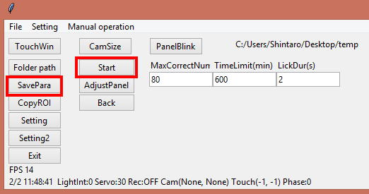

4. About "Save"
This task saves task parameters when clicking "SavePara" or "Start" button by the following parameters.

=======================================================================================================================
if GetSaveTrgStat() == 1: # If save trigger is activated
# Parameters will be saved into a folder named "ParametersForTask90"
Str="ParametersForTask"+str(GetTaskID()) # Substitute save folder path
if os.path.exists(Str) == False: # If save folder doesn't exist
os.mkdir(Str) # Create the folder
with open(Str+'/MaxCorrectNum.dat', 'wb') as PickleInst[GetTaskID()]:
pickle.dump(MaxCorrectNumVar.get(),PickleInst[GetTaskID()]) # Save a value of "MaxCorrectNumVar" as "MaxCorrectNum.dat" file
with open(Str+'/TimeLimit.dat', 'wb') as PickleInst[GetTaskID()]:
pickle.dump(TimeLimitVar.get(),PickleInst[GetTaskID()])
with open(Str+'/LickDur.dat', 'wb') as PickleInst[GetTaskID()]:
pickle.dump(LickDurVar.get(), PickleInst[GetTaskID()])
=======================================================================================================================
if GetSaveTrgStat() == 1: # If save trigger is activated
When "SavePara" or "Start" button is clicked, SaveTrg,aOperantHouse's internal variable, is set to "1" and this value can be obtained with GetSaveTrgStat().The above code check the value of SaveTrg every frame and if the value is "1", it executes the following code to save the parameters.
Str="ParametersForTask"+str(GetTaskID()) # Substitute save folder path
if os.path.exists(Str) == False: # If save folder doesn't exist
os.mkdir(Str) # Create the folder
Before the saving, it checks if the save folder is exist and if not, it creates the folder.
with open(Str+'/MaxCorrectNum.dat', 'wb') as PickleInst[GetTaskID()]:
pickle.dump(MaxCorrectNumVar.get(),PickleInst[GetTaskID()]) # Save a value of "MaxCorrectNumVar" as "MaxCorrectNum.dat" file
This code creates MaxCorrectNum.datwhich contains the value ofMaxCorrectNumVar.We need to useget()function to get the valuebecause type of this variable is IntVar.
The same process is repeated to save values of TimiLim and LickDur.